OBS使用
参考：BV1W34y1o7E9 （版本有改动）
OBS官网：https://obsproject.com/
添加设备
添加图象/图象幻灯片放映/文字/媒体源/色源
直接用鼠标拖动调整大小是按比例缩放，按住Shift再调整可以取消比例锁定
按住Alt可以裁剪图象

媒体源如下所示（以寒假小作业为例子）

色源（一个色块）：
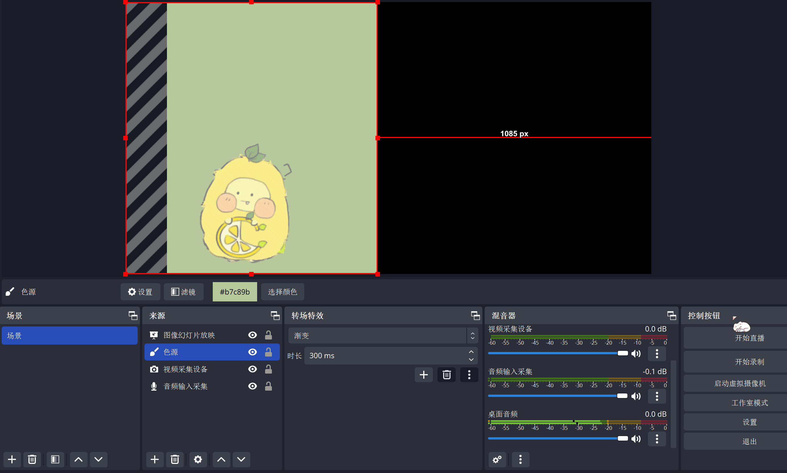
注：音频相关不好以图片形式展示，这里不做表述。
添加显示屏
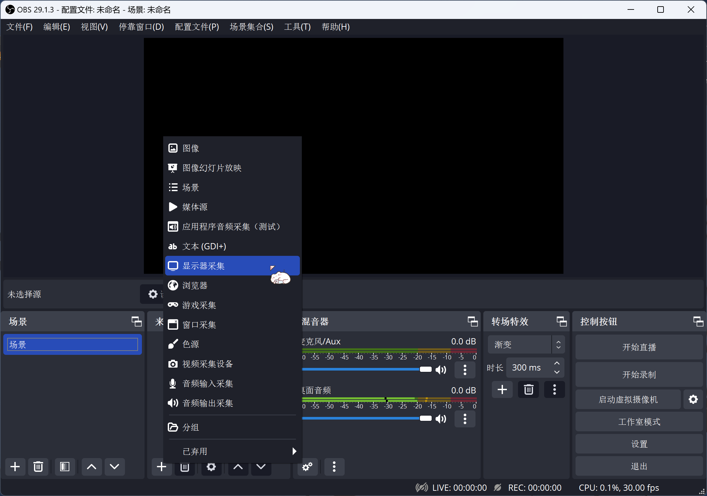
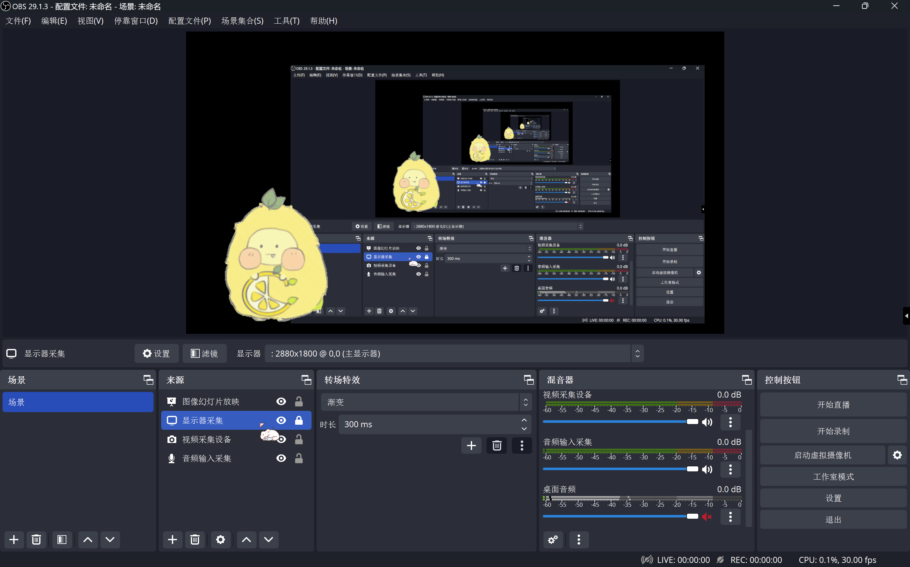
游戏采集/窗口采集
[游戏采集]——[模式-采集特定窗口]、[窗口]-选择所需窗口
[显示屏采集] / [游戏采集] 右侧的眼睛可以选择显示与否


窗口采集时被采集窗口不能最小化
（采集前最小化则OBS找不到该窗口，无法采集；采集后最小化则界面保持最小化前的状态）
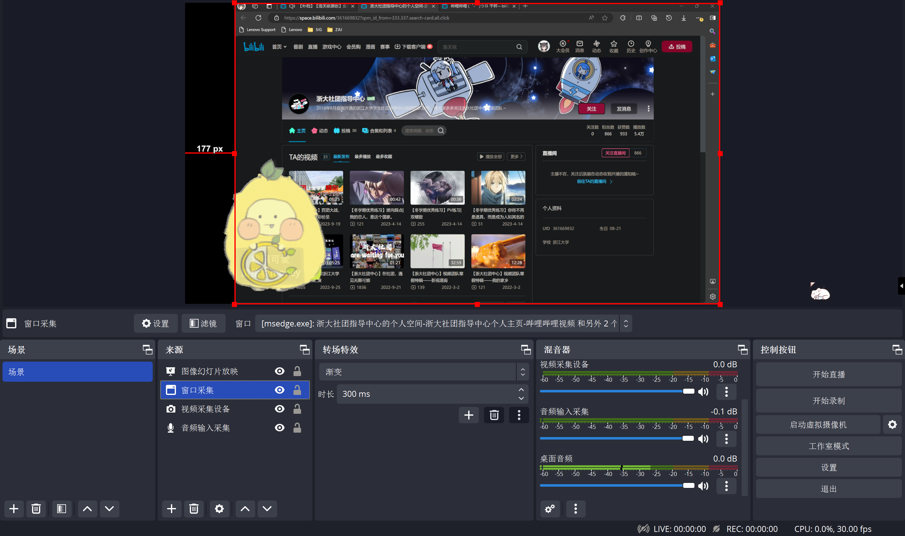
添加视频采集设备
电脑摄像头可以直接添加，外接摄像头需要通过USB连接到电脑上。 注意：一个摄像头只能被一个软件抓取。如果该摄像头已经被腾讯会议等抓取，就不能被OBS抓取了
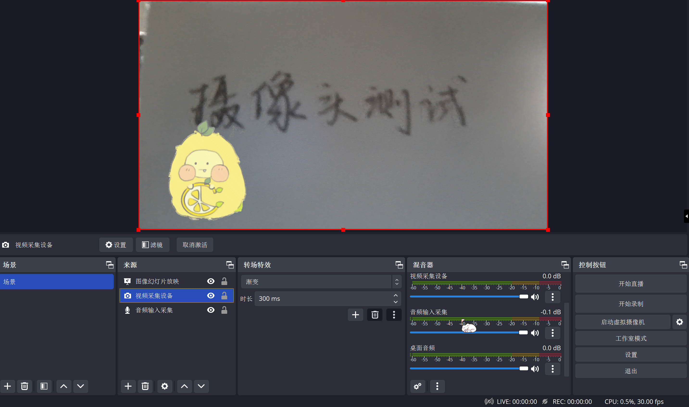
添加音频输/输出采集
输入的音频可以在右侧混音器监测到

音频输出同理（注意输出的是哪里的音频，以下图为例，带着耳机故扬声器频道没有声音）

新建/添加场景

可以在一个场景中添加另一个场景（处在上位的[来源]显示在最上方，如这里文本[图象]）

参数设置（仅针对直播/需要后期剪辑视频的情况）
右下角[设置]——[输出]——[输出模式-高级] 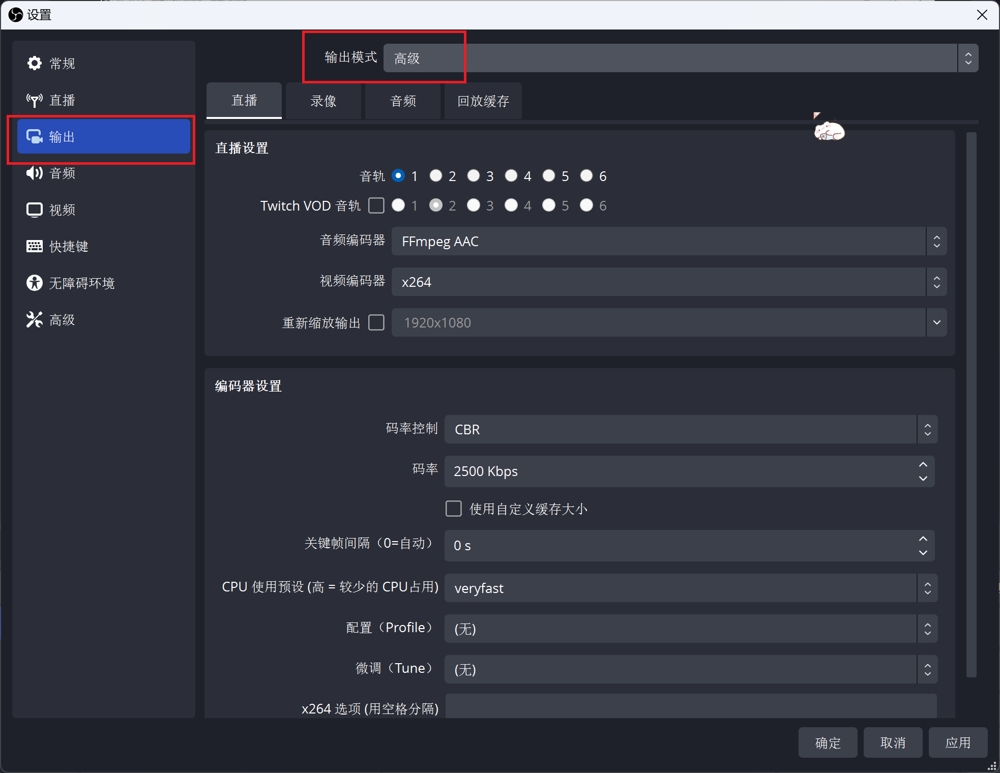
录像设置
[设置]——[输出]——[输出模式-高级]——[录像]
[类型-标准]——[录像路径]-想要的保存路径——[录像格式-MPEG-4(.mp4)]——[视频编码器-x2641]——[音轨-2和3] 2
[编码器设置-码率控制-VBR] （要高清晰度可以提高码率，显卡编码VBR模式下的码率和最大码率同理3）

[高级音频设置]——一个调成1、3轨道，一个调成1、2轨道
*目的是后期pr剪视频时可以区分出桌面音频和麦克风音频


然后就可以开启录制了（开启录制后，开启按钮变成停止录制按钮）
直播设置
[设置]——[输出]——[输出模式-高级]——[直播] 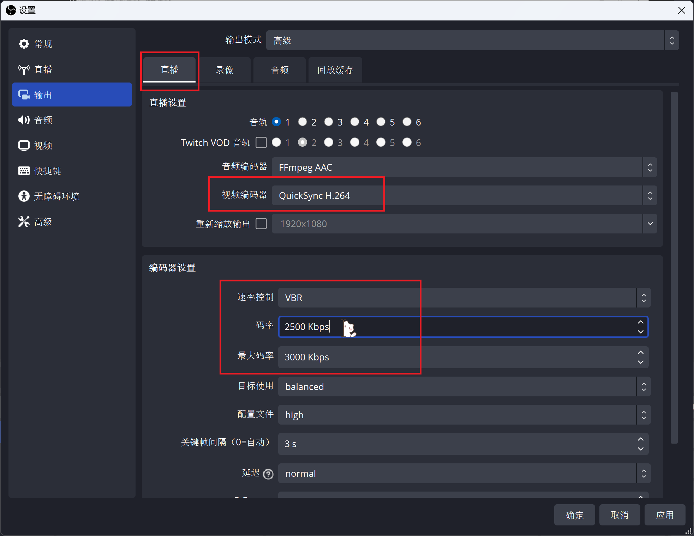 [视频编码器]-选择合适的编码器4——[速率控制-VBR]——调整码率 码率越高则清晰度越高，具体选择根据网速而定，参考如下。【省流：6000】
参考方案（可不看）：测速网，点击测速，出现的上传速率后加三个零为可调的最高码率。 如下图表示可设置的最高码率为13000，但是b站容不下特别高，观众看起来也会卡。建议b站直播码率在6000左右。

直播
b站直播
b站——[直播中心]——相关设置（分区、标题等）——[开始直播]——出现推流码等 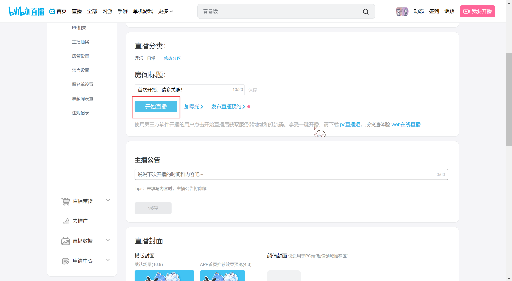 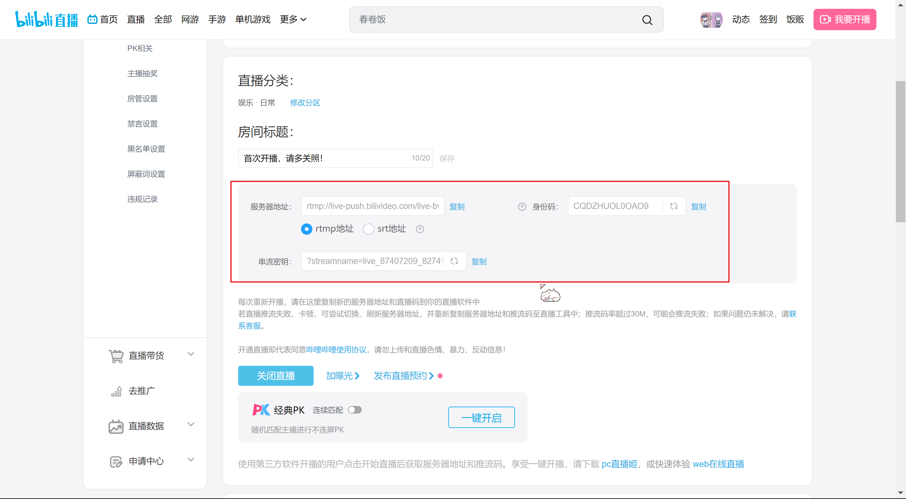
OBS——[设置]——[直播]——[服务]
服务选b站，则只需要复制串流密钥（据说容易崩）
【建议】服务选自定义，则分别复制服务器地址和串流密钥到服务器和推流码
服务器地址选srt地址更稳定


设置完成后点击[开始直播]
钉钉直播（腾讯会议等应该类似）
直播后摄像头选择OBS虚拟摄像头，这时候可能会出现如下所示画面，这是因为OBS虚拟摄像头未开启。开启后，OBS界面的画面可以在钉钉直播中显示。


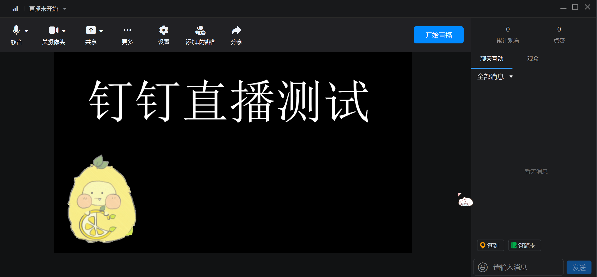
工作室模式
直接进行直播或录制时，直播/录制画面与自己做的调整是同步的。
如果想先调整，直到效果满意了再同步到直播/录制中该怎么办呢？可以使用工作室模式
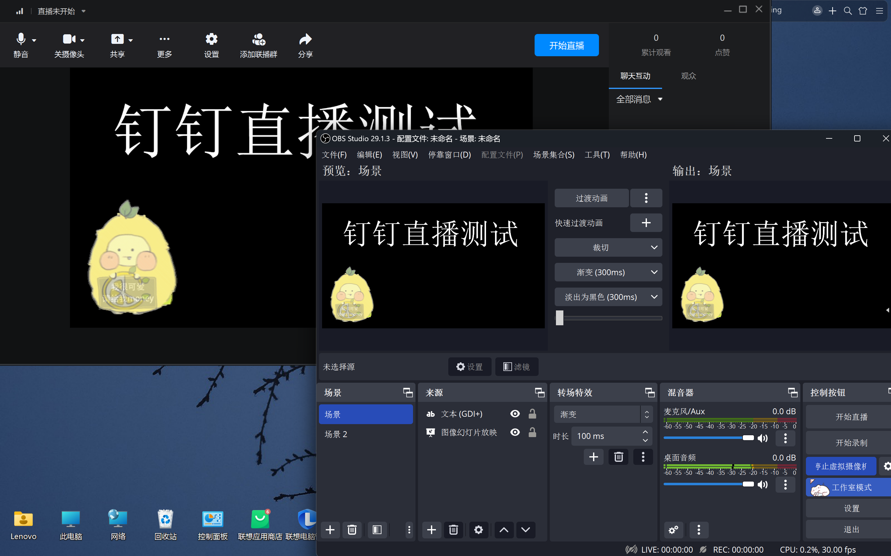
下图中，把vc酱隐藏后，它并没有在直播中消失。推动两个画面中的拉杆后，直播画面同步。
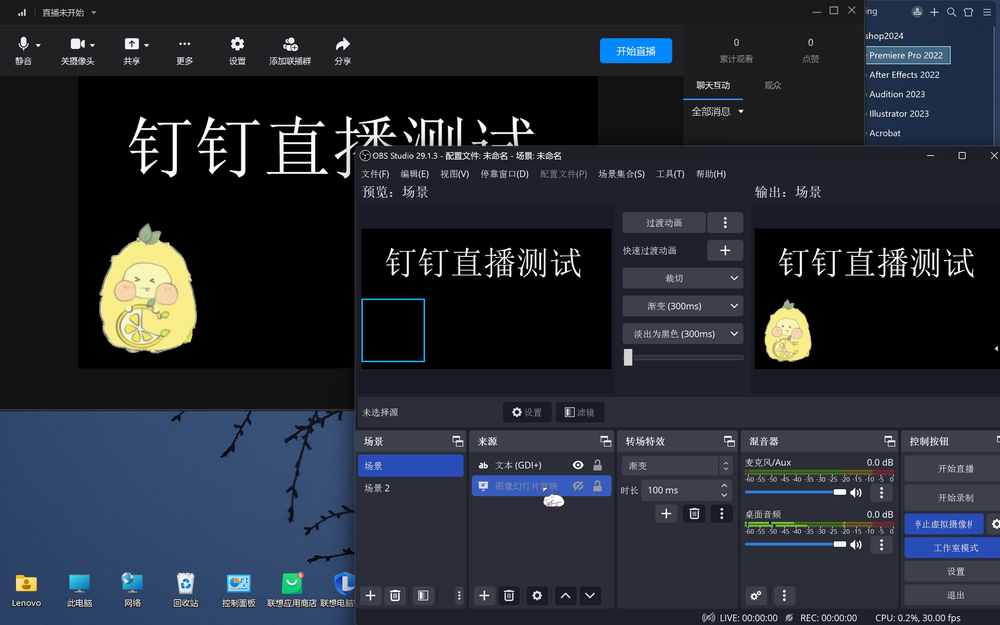

以其他形态出击！（以live2D为例）
VTube Studio（以此软件举例）可以通过面捕将你的动作实时同步到live2D模型上，如下所示

开启Vtube Studio的虚拟摄像头后，可以把它显示在OBS里，让它代替你直播。（具体实现就不算在OBS部分了，这里不多提）

注释区：
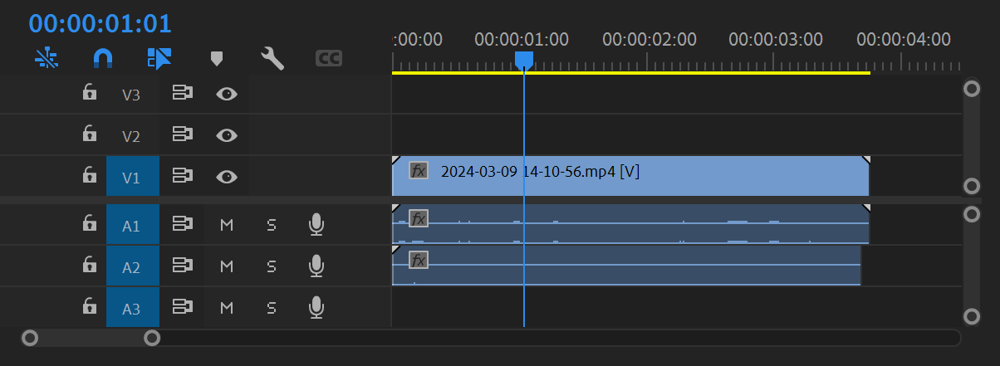
参考教程使用的是台式电脑，选择的是显卡编码。
笔记本电脑可以看是集成显卡（集显则显卡编码效果差）还是有独立显卡（具体效果对比参见上面链接）。
我因为电脑是集显，选择了cpu编码（但是测试的时候发现码率2500左右的时候差别不大，清晰度都一般）。
查看电脑显卡的方式：此电脑-[右键]-管理-设备管理器-显示适配器，只有一个则是集显，有不止一个则有独显。 ↩